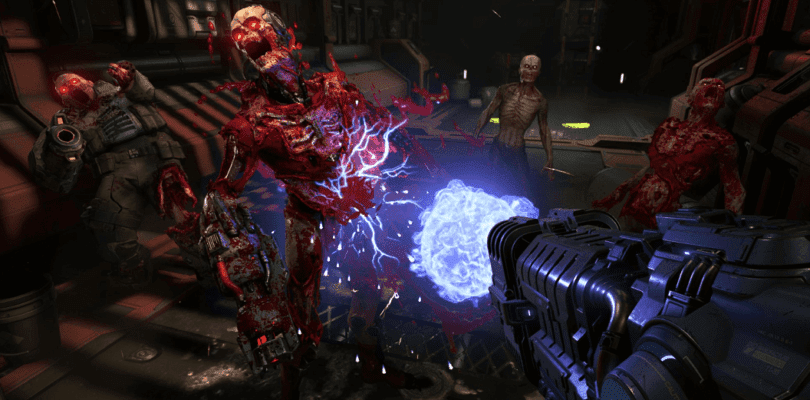
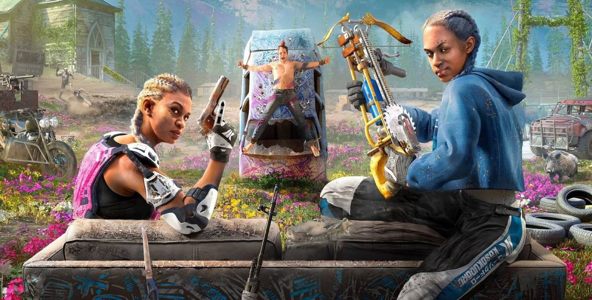
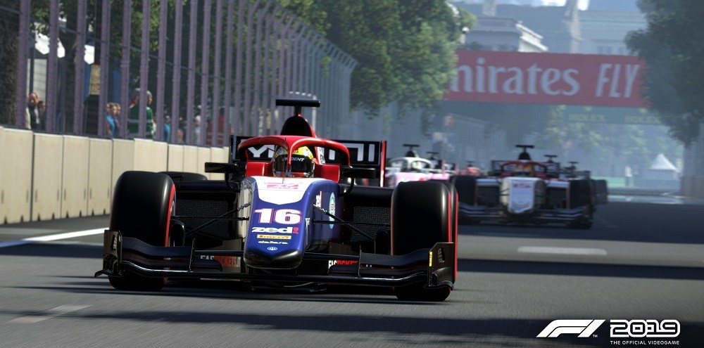
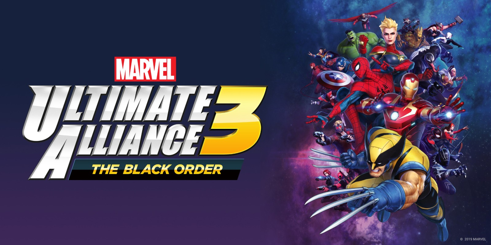
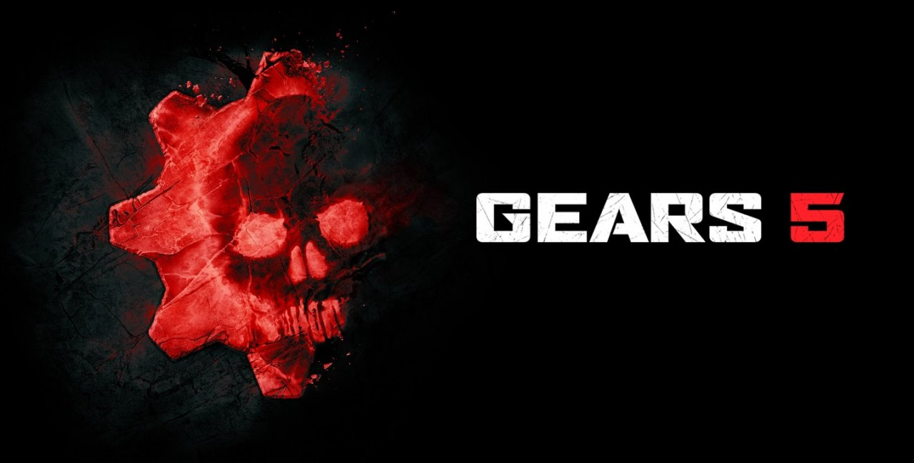
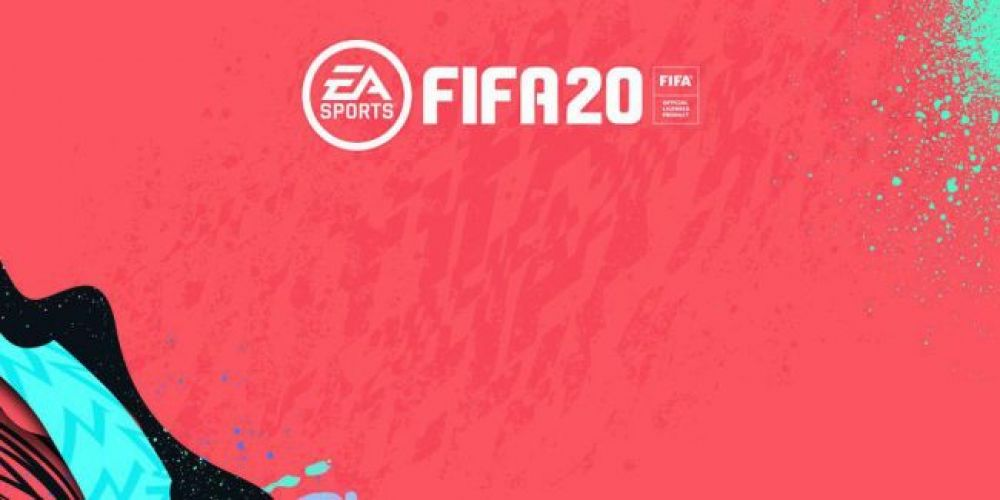
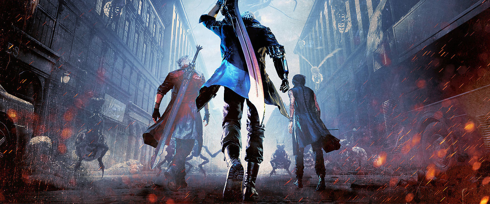
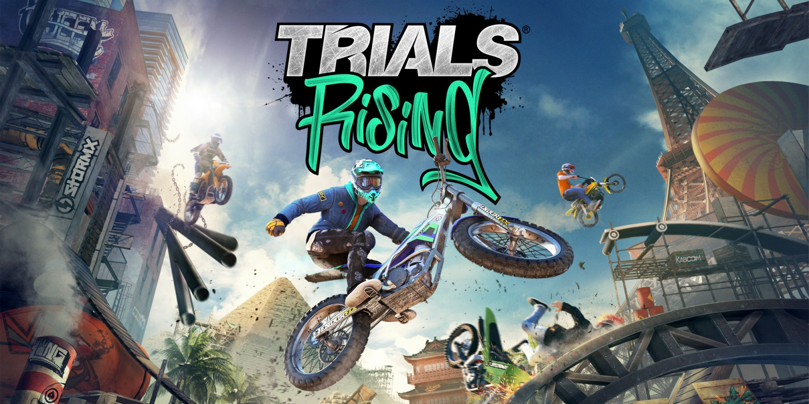

Crash Team Racing Nitro Fueled es un videojuego, perteneciente al género de carreras de karts
desarrollado por el estudio Beenox y publicado por Activision. Es una nueva versión del
videojuego
Crash Team Racing del año 1999, que fue desarrollado originalmente por la empresa Naughty Dog
para
la PlayStation, y también incluye contenido de los videojuegos Crash Nitro Kart, desarrollado
originalmente por Vicarious Visions en el año 2003, y Crash Tag Team Racing, desarrollado
originalmente por Radical Entertainment en el año 2005.
Fecha de lanzamiento: 21 de junio de 2019
Plataformas: PlayStation 4, Nintendo Switch, Xbox One
Modo juego: Un jugador, Multijugador
Star Wars Jedi: Fallen Order
Star Wars Jedi: Fallen Order es un próximo videojuego de acción y aventura para un solo jugador
desarrollado por Respawn Entertainment y publicado por Electronic Arts, ambientado en el
universo de
Star Wars poco después del Episodio III - La venganza de los Sith.
Fecha de lanzamiento: 15 de noviembre de 2019
Plataformas: PC, Microsoft Windows, Xbox One, PlayStation 4
Modo juego: Un jugador
Doom Eternal

Doom Eternal es un próximo videojuego de acción y disparos en primera persona desarrollado por
id
Software y publicado por Bethesda Softworks. El juego se lanzará para las plataformas
PlayStation
4, Xbox One, Microsoft Windows, Stadia y Nintendo Switch.
Fecha de lanzamiento: 21 de junio de 2019
Plataformas: PlayStation 4, Xbox One, Microsoft Windows, Stadia y Nintendo
Switch
Modo juego: Un jugador, Multijugador
Far Cry New Dawn

Far Cry New Dawn es un videojuego de acción-aventura desarrollado por Ubisoft Montreal y
distribuido
por Ubisoft. El juego es un spin-off de la serie Far Cry y la secuela narrativa de Far Cry 5.
La historia se ambienta 17 años después de uno de los finales de Far Cry 5, en donde el pueblo
de
Hope County es destruido por una serie de explosiones nucleares. Los supervivientes de la
tragedia
intentan reconstruir la comunidad, mientras resisten la amenaza constante de un grupo de
bandidos
llamado Highwaymen, liderado por las hermanas mellizas Mickey y Lou.
Fecha de lanzamiento: 15 de febrero de 2019
Plataformas: Microsoft Windows, Xbox One, PlayStation 4
Modo juego: Un jugador, Multijugador
F1 2019

F1 2019 es un videojuego de carreras basado en el Campeonato Mundial de
Fórmula Uno 2019. El juego está desarrollado y publicado por Codemasters y es el duodécimo
título de
la serie de Fórmula Uno desarrollada por el estudio.
Fecha de lanzamiento: 28 de junio de 2019
Plataformas: Microsoft Windows, Xbox One, PlayStation 4
Modo juego: Un jugador, Multijugador
Marvel Ultimate Alliance 3

Marvel Ultimate Alliance 3: La Orden Negro es un futuro videojuego desarrollado por Koei Tecmo‘s
Team Ninja y publicado por Nintendo para el interruptor de Nintendo. Es la tercera entrega de la
serie Marvel: Ultimate Alliance después de Marvel: Ultimate Alliance de 2006 y Marvel: Ultimate
Alliance 2 de 2009, y el primerjuego de Marvel producido y publicado por Nintendo. Estará en un
universo completamente diferente a los dos juegos anteriores.
Fecha de lanzamiento: 19 de julio de 2019
Plataformas: Nintendo Switch
Modo juego: Un jugador, Multijugador
Gears 5

Gears 5 es un próximo videojuego desarrollado por The Coalition y publicado por Xbox Game
Studios
para Microsoft Windows y Xbox One. Es una secuela de Gears of War 4
Fecha de lanzamiento: 10 de septiembre de 2019
Plataformas: Xbox One, Microsoft Windows
Modo juego: Un jugador, Multijugador
FIFA 20

FIFA 20 es un próximo videojuego de simulación de fútbol publicado por Electronic Arts, como la
27ª
entrega de la serie FIFA. Se anunció por primera vez en una conferencia de prensa en el E3 2019
y se
lanzará el 27 de septiembre de 2019.
Fecha de lanzamiento: 27 de septiembre de 2019
Plataformas: Nintendo Switch, Microsoft Windows, Xbox One, PlayStation 4
Modo juego: Un jugador, Multijugador
Devil May Cry 5

Devil May Cry 5 es un videojuego perteneciente al género hack and slash, desarrollado y
publicado
por la empresa Capcom.
Es la sexta entrega de la serie Devil May Cry, y la primera entrega principal desde el
lanzamiento
de Devil May Cry 4 en el año 2008. El juego contará con Dante y Nero como personajes jugables,
junto
a V, un misterioso nuevo cliente que llega a las oficinas de Devil May Cry. Devil May Cry 5
recibió una recepción positiva de parte de la critica especializada y el público.
Fecha de lanzamiento: 8 de marzo de 2019
Plataformas: Microsoft Windows, Xbox One, PlayStation 4
Modo juego: Un jugador
Trials Rising

Trials Rising es un videojuego de carreras multijugador 2.5D desarrollado por RedLynx y Ubisoft
Kiev
y publicado por Ubisoft.
Es la primera entrega principal de la serie Trials' desde Trials Fusion, lanzado en 2014. Siendo
anunciado en el E3 2018, el 11 de junio de 2018 en la conferencia de prensa de Ubisoft.
Fecha de lanzamiento: 26 de febrero de 2019
Plataformas: PlayStation 4, Xbox One, Nintendo Switch, Microsoft Windows